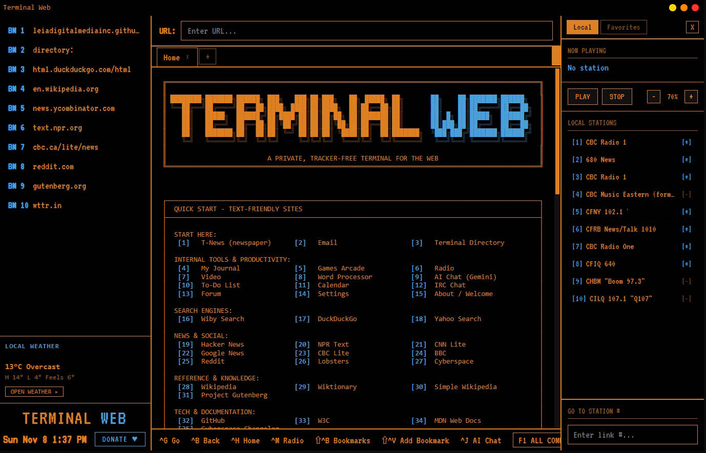

╔════════════════════════════════════════════════════════════════════════════════════════════════╗
║ ║
║ ████████╗███████╗██████╗███╗███╗██╗███╗██╗█████╗██╗██╗██╗███████╗██████╗ ║
║ ╚══██╔══╝██╔════╝██╔══██╗████╗████║██║████╗██║██╔══██╗██║██║██║██╔════╝██╔══██╗ ║
║ ██║█████╗██████╔╝██╔████╔██║██║██╔██╗██║███████║██║██║█╗██║█████╗██████╔╝ ║
║ ██║██╔══╝██╔══██╗██║╚██╔╝██║██║██║╚██╗██║██╔══██║██║██║███╗██║██╔══╝██╔══██╗ ║
║ ██║███████╗██║██║██║╚═╝██║██║██║╚████║██║██║███████╗╚███╔███╔╝███████╗██████╔╝ ║
║ ╚═╝╚══════╝╚═╝╚═╝╚═╝╚═╝╚═╝╚═╝╚═══╝╚═╝╚═╝╚══════╝╚══╝╚══╝╚══════╝╚═════╝ ║
║ ║
║ A PRIVATE, TRACKER-FREE TERMINAL FOR THE WEB ║
╚════════════════════════════════════════════════════════════════════════════════════════════════╝

The home screen: numbered links, bookmarks, local weather and radio, all in one colour.
About
For the past year I've been building Terminal Web, a free desktop browser for
Windows that shows the whole web the way a terminal from the 80s would: one font, one colour
(you pick it), and no clutter.
It's free and built by one person. I started it last November, and it's being released this
month, right around its first birthday.
[ ONE YEAR OLD · NOVEMBER 2026 ]
What it does
Rebuilds messy websites into clean, readable text with numbered links. Type a number and you're there. You can drive the whole thing from the keyboard.
Turns photos into pixel art, like an old game console, in your chosen colour.
Boots like an old PC: a BIOS screen, then a DOS window, then your password. You can add an authenticator app too.
Three looks: classic dark terminal, a soft light mode and a blue mid mode, and you can change the colours any way you like.
Signs you in right inside the app: when a site needs a login, its real page opens in Terminal Web, then you're back to clean text.
Search built in: DuckDuckGo, Yahoo and Wiby, each with its own search box.
Programs built in
Internet radio, with your local stations ready in a side panel.
AI chat in a side panel that slides over whatever you're reading.
A games arcade for a little text-mode fun.
Video, played right in the terminal.
A journal, a calendar, a to-do list and a word processor.
Chat rooms and a forum to meet other users.
Local weather beside the clock, and a weather browser for anywhere.
T-News, a newspaper with flowing columns that updates itself all day with local, national, world and sports news.
Make your own site
Terminal Web Builder makes sites in the same style: text, frames, numbered
links and pixel-art pictures. Publish it anywhere, then add it to the
Terminal Directory, our own little search engine for the terminal web.
In Terminal Web, type directory to browse every site from A to Z, or
td and your words to search them all.
No trackers, no pop-ups and no autoplay. Your password opens the app, an optional authenticator app adds a second lock, and your email and settings stay on your own computer.
Keys
[Ctrl+G] Go to an address [Ctrl+B] Back [Ctrl+H] Home
[Ctrl+M] Radio [Ctrl+J] AI chat [Ctrl+,] Settings
[Shift+Ctrl+B] Bookmarks [Shift+Ctrl+V] Add bookmark
[F1] Every command, with what it does
In the address bar: ? pizza near me searches DuckDuckGo
td hockey searches the Terminal Directory
Download
For Windows 10 and 11. Arriving this month, right around Terminal Web's first birthday.
Windows may say it doesn't recognise the app the first time. Click More info, then Run anyway.
When it's out, I'd love for you to try it and tell me what breaks, what you'd add, and what sites you'd build with it.
Support Terminal Web
Terminal Web is free, and it's built and maintained by one person. If you enjoy it, a small
donation helps cover the costs of keeping it running and funds new features. Every bit is
appreciated, but it's never required.